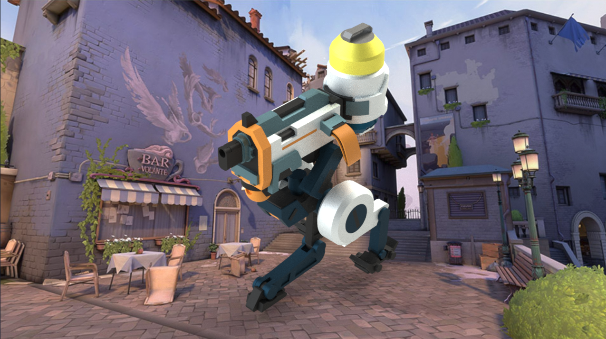
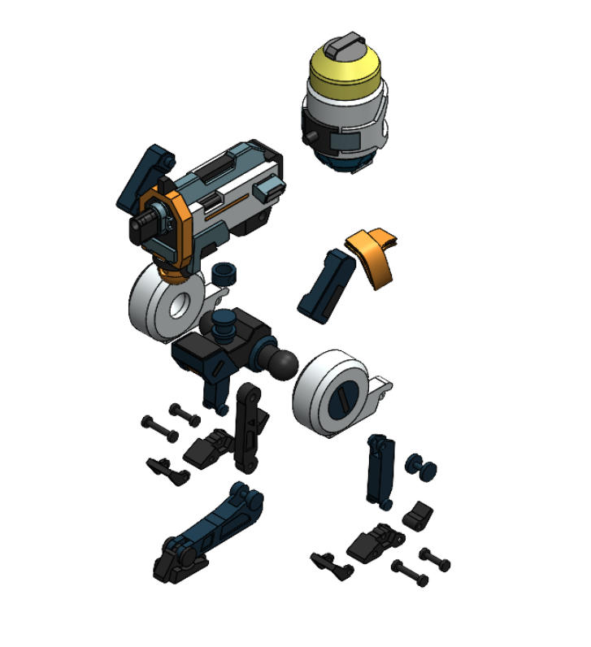

Complex geometry
Revolves, lofts, wraps, and 3D sketches.
Project 04 / CAD & assembly design
A fully articulated SolidWorks model built from in-game references.

Designed a fully articulated 3D model of the Killjoy Turret in SolidWorks, accurately replicating its geometry and motion from in-game references. The project ran from March to June 2025 and included 17 unique components.
Reproduce the turret’s geometry and articulation while improving the design for manufacturability and assembly through material selection based on strength and weight considerations.
Designed the model, created the complex part geometry, and assembled 17 unique components. Used concentric and coincident mates to ensure proper alignment and articulation, and selected materials to improve structural integrity of moving components.
Assembly rendering and exploded view.

Used in-game references to guide the geometry and motion of the model. Combined advanced SolidWorks modeling features with assembly mates and material selection to address complex shapes, articulation, and assembly considerations.
Revolves, lofts, wraps, and 3D sketches.
17 components with concentric and coincident mates.
Strength and weight considerations for moving components.
The assembly includes 17 unique CAD parts. Modeling methods include revolves, lofts, wraps, 3D sketches, and complex geometry. Concentric and coincident mates ensure proper alignment and articulation of the fully articulated model.
Selected materials based on strength and weight considerations to improve structural integrity of moving components and support design for manufacturability and assembly.
[ADD MATERIAL DETAILS: name the selected materials and explain the strength, weight, and assembly tradeoffs. Add calculations or simulation results only if performed.]
Improved the design for manufacturability and assembly through material selection based on strength and weight considerations.
[ADD MANUFACTURING STATUS: confirm whether any components were fabricated, and document actual processes if applicable.]
[ADD TESTING STATUS: document actual CAD checks or physical tests, if performed.]
[ADD CHALLENGE: show a complex feature or assembly-mate problem and explain the modeling decision that resolved it.]
Completed a fully articulated SolidWorks model with 17 unique components, accurately replicating geometry and motion from in-game references. Concentric and coincident mates ensured proper alignment and articulation. Material selection improved manufacturability, assembly, and structural integrity of moving components.
[ADD WHAT I LEARNED: explain a concrete lesson about feature strategy, complex geometry, or assembly constraints.]